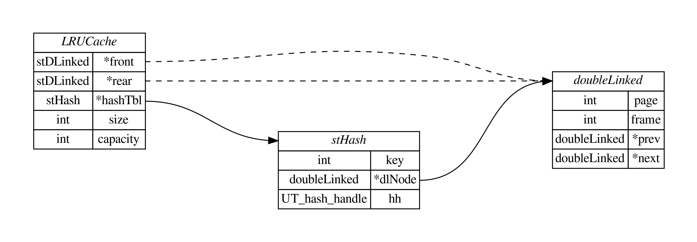

LeetCode 刷题之 146 LRU 缓存
LRU 缓存：请你设计并实现一个满足 LRU（Least Recently Used）缓存约束的数据结构。
实现 LRUCache 类：
LRUCache(int capacity)以正整数作为容量capacity初始化 LRU 缓存。int get(int key)如果关键字key存在于缓存中，则返回关键字的值，否则返回-1。void put(int key, int value)如果关键字key已经存在，则变更其数据值value；如果不存在，则向缓存中插入该组key-value。如果插入操作导致关键字数量超过capacity，则应该逐出最久未使用的关键字。
函数 get 和 put 必须以 O(1) 的平均时间复杂度运行。
1 | 输入 |
题目分析
最近最久使用页面置换算法（Least Recently Used, LRU）是操作系统中局部页面置换算法中性能较好的一种算法，当一个缺页中断发生时，它选择 最近最久未使用 的那个页面淘汰。
在题目中，如果 get 方法获取的关键字存在于缓存中，除了要返回关键字对应的值，同时这条记录将会被刷新为最近（最新）被使用的一条记录。同样地，如果 put 方法存储的关键字存在于缓存中，除了要修改关键字对应的值，同时这条记录也将会被刷新为最近（最新）被使用的一条记录。
题目还要求使用 O(1) 的平均时间复杂度完成 get 和 put 方法，这可以使用「双向链表」和「哈希表」来共同设计这个 LRU 缓存数据结构。
双向链表 + 哈希表
使用「双向链表」和「哈希表」来共同设计这个 LRU 缓存数据结构：
- 双向链表用于维护缓存中的记录，使得这些记录按照访问时间顺序排序，也就是「链表头为最近最久未使用」的一条记录，「链表尾为最新使用」的一条记录。
- 哈希表用于存储「节点关键字和它在链表中的地址」。
这样，我们在进行 get 操作时，可以使用关键字查找哈希表中的 key，来获取它在双向链表中的地址：
- 若查找失败，则返回
-1； - 若查找成功，则将对应的节点从链表头部（或中间、尾部）移动到链表的尾部。
在进行 put 操作时，可以使用关键字查找哈希表中的 key，来获取它在双向链表中的地址：
- 若查找成功，则将对应的节点从链表头部（或中间、尾部）移动到链表的尾部；
- 若查找失败，则需要新建一个节点并将其追加到链表尾部，在追加节点前，需要判断缓存大小是否小于容量大小：
- 若小于，则直接新建一个节点并将其追加到链表尾部即可；
- 若不小于，则需要删除链表头的节点，并将该节点从哈希表中删除；再新建一个节点并将其追加到链表尾部。
数据结构设计
双向链表：
1 | // 定义双向链表的结构体 |
哈希表：
1 | // 定义哈希表的结构体 |
LRU 缓存：
1 | // 定义 LRU 缓存的结构体 |
上述数据结构关系图：
接口实现
创建 LRU 缓存：
1 | // 创建 LRU 缓存 |
实现 get 方法和 put 方法：
1 | void printDLinked(stDLinked *node) { |
代码执行结果
针对上面的测试用例，给出了每步操作后的双向链表的内容，如下。
1 | Put: (1, 1) print DL: (1, 1)->NULL |